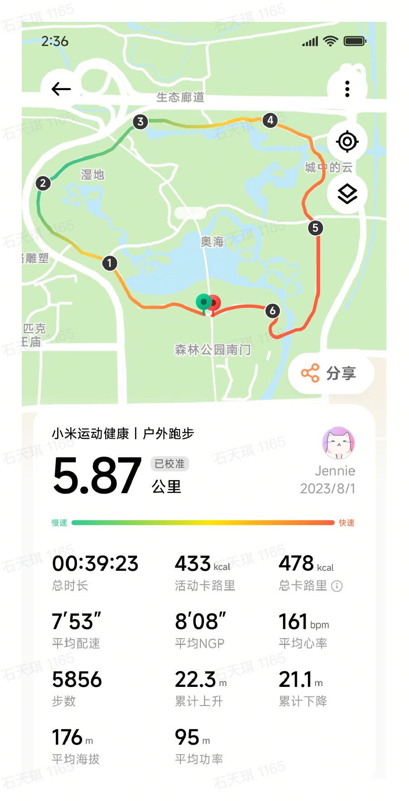
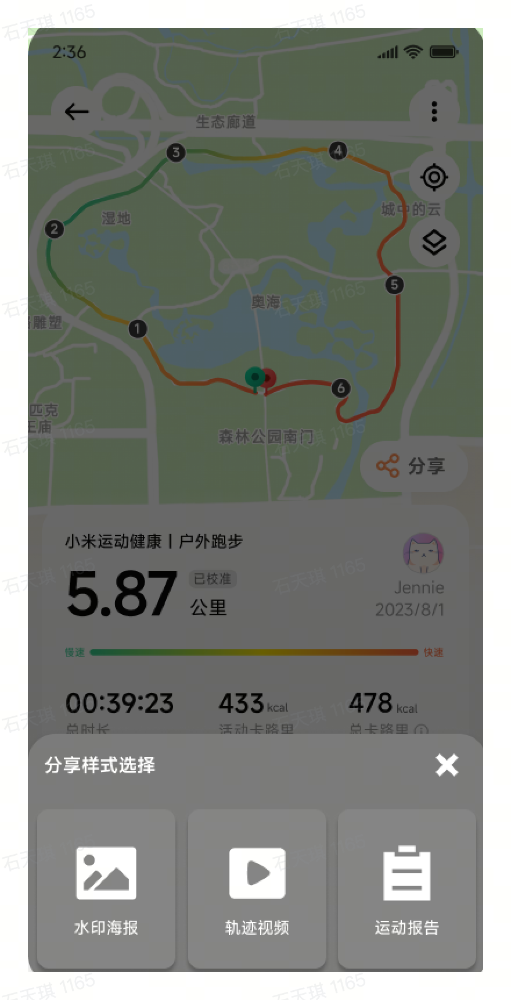
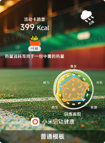
普通模板
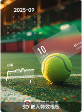
3D 嵌入特效模板
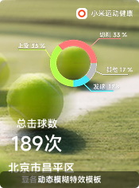
动态模糊特效模板
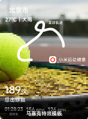
马赛克特效模板
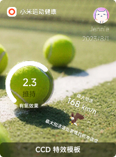
CCD 特效模板
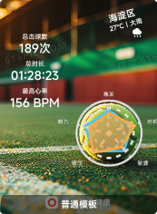
普通模板
背景编辑
+
海报预览
全部
数据
图表
其他
确认退出海报编辑？
模板数量已达上限！
▶
图片添加
地图展示
音乐选择
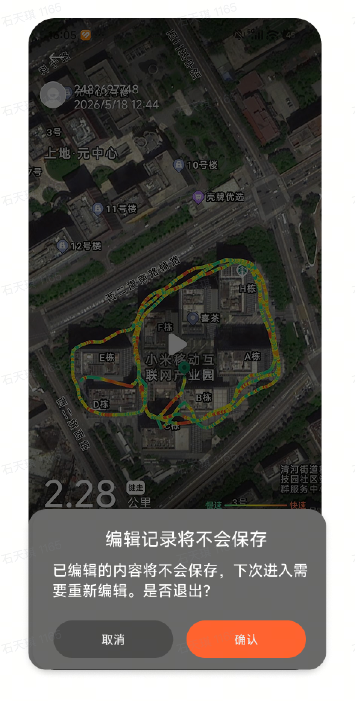
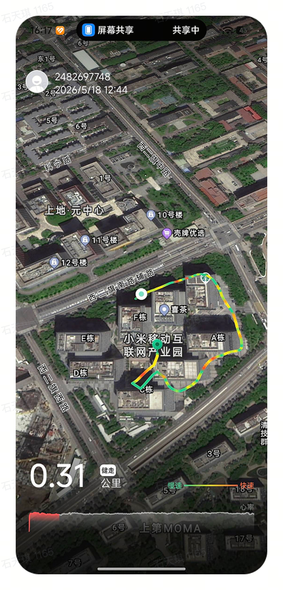
录制中...
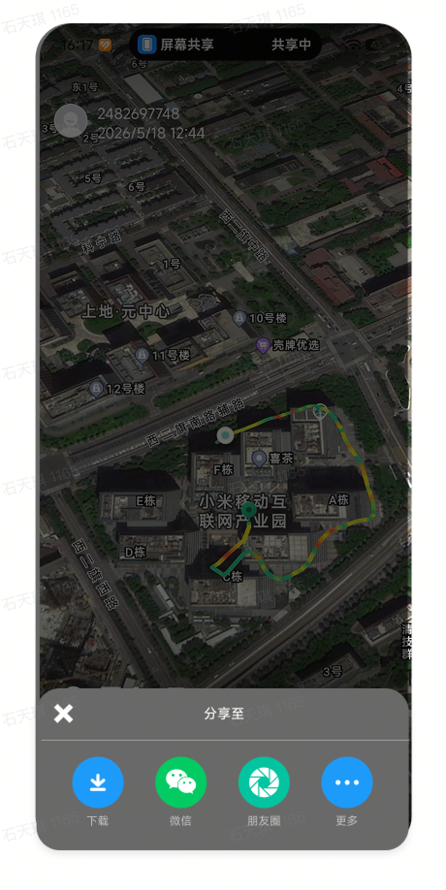
还有 15 张照片可选
正在轨迹视频中添加图片，请稍后
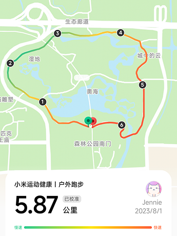
00:39:23
总时长
433kcal
活动卡路里
478kcal
总卡路里
7'53"
平均配速
8'08"
平均NGP
161bpm
平均心率
5856
步数
22.3m
累计上升
21.1m
累计下降
176m
平均海拔
95m
平均功率
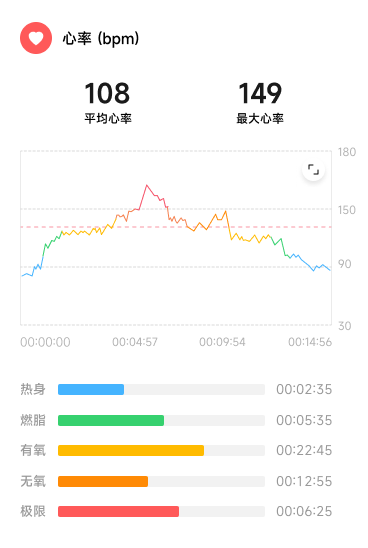
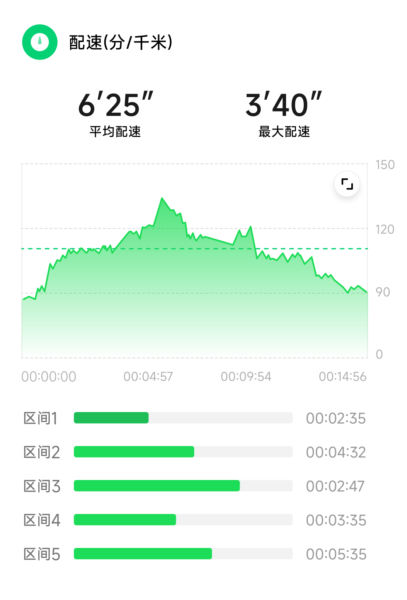
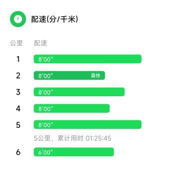
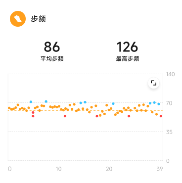
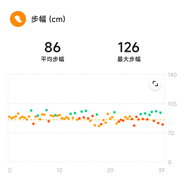
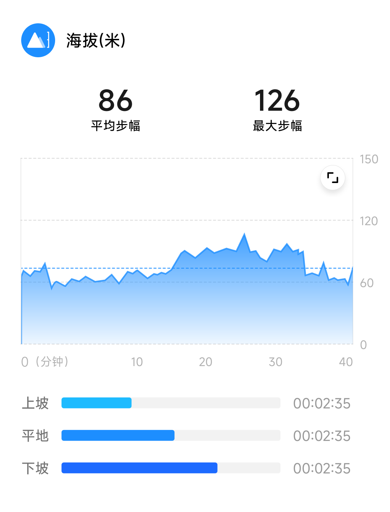
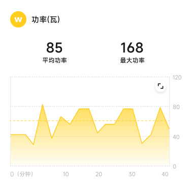
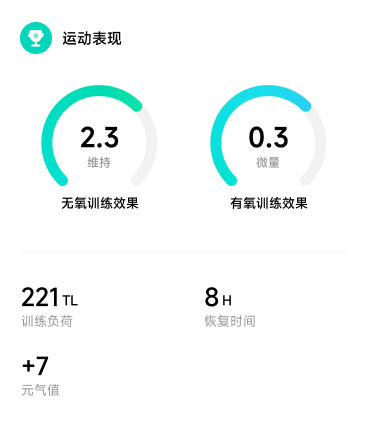
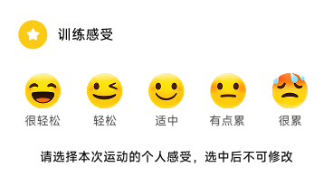
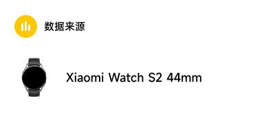
∧
上滑可浏览全图
数据展示
图表展示
地图展示
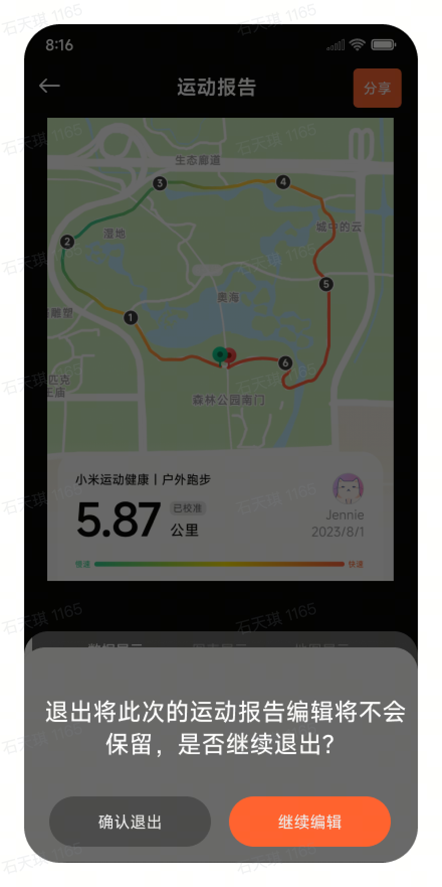
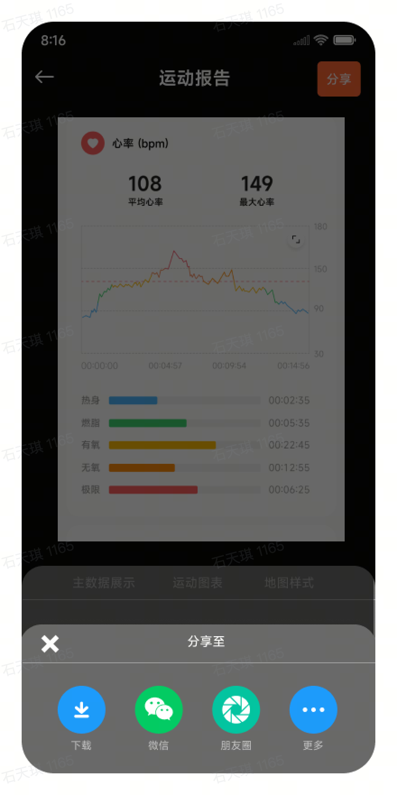